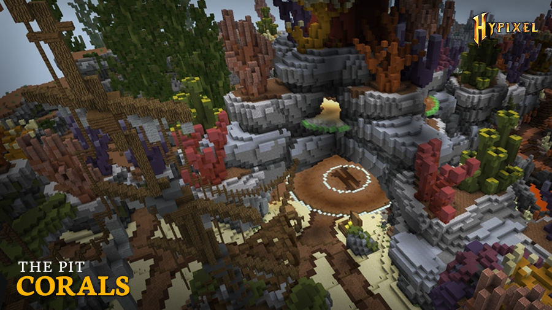

|
The Pit 0.3.8 - Corals Map
|
|  |
| A screenshot of the new Corals map. |
| Release Date | Aug 20th, 2018 |
Forums Approval*Forums approval is based on the number of positive reactions on the update's forum post divided by the number of total reactions.
Reactions only count if they were added in the first month of the post being up. | 100% |
| Forums Author | Minikloon |
| ← Drop confirmation improvements —
Tiny Bugpatch
→
|
The Pit 0.3.8 was the seventh major version of the Hypixel Pit. It introduced the Corals map, Marathon perk, and some bug fixes and balance changes.
Upon release, the Marathon perk had the following description and stats. It was noted that the perk was "designed to give an edge while grinding in iron armor, and is particularly useful with First Strike, Golden Heads, or certain mystic enchants."
Major Event changes:
- (↑) Team Deathmatch Gold reward increased to (100g → 200g) for a top 20 position, (500g → 1500g) for a top 10 position, and (2000g → 2500g) for a top 3 position. Additionally, 500g is rewarded to all members of the winning team.
- (↑) Pizza event now grants a +4 XP bonus for every pizza delivered, increasing by +4 XP every 2 pizzas delivered.
- (↓) Robbery Gold reward decreased to 1× for a top 20 position, (2× → 1.5×) for a top 10 position, and (3× → 2×) for a top 3 position.
- (↓) Healer enchantment is disabled during the Beast event.
Balance changes:
- (↑) Shark enchantment's activation threshold was increased from (4♥︎ → 6♥︎).
- (~) Telebow enchantment's cooldown was increased drastically, however, the cooldown decreases by 3 seconds for every shot landed with the bow.
- I: (15 -> 90) seconds
- II: (5 → 45[bug]While the patch notes reference a 50 second cooldown, the in-game description and effect are a 45 second cooldown.) seconds
- III: (2 → 24) seconds
- (~) Singularity enchantment's damage cap now applies after armor, however, the damage cap was decreased.
- I: 3♥︎ damage cap
- II: (2.5♥︎ → 2♥︎) damage cap
- III: (2♥︎ → 1.5♥︎) damage cap
- (↓) Billionaire enchantment's damage bonus was decreased and its gold cost per hit was increased.
- I: ([Unknown] → +33.3%) damage, (75g → 100g) per hit
- II: ([Unknown] → +66.7%) damage, (150g → 200g) per hit
- III: (150% → +100%) damage, (225g → 350g) per hit
- (↓) Crush enchantment's Weakness effect duration was decreased and a 2 second cooldown was added for all tiers. A low-pitched glass breaking sound effect now plays upon activation.
- I: (1 → 0.2) seconds
- II: (1.5 → 0.4) seconds
- III: (2 → 0.5) seconds
- (↓) What doesn't kill you enchantment's healing was decreased.
- I: (2♥︎ → 1.5♥︎) heal
- II: (5♥︎ → 2.5♥︎) heal
- III: (8♥︎ → 3.5♥︎) heal
- (↓) Gomraw's Heart enchantment's regeneration duration was decreased.
- I: 0 seconds
- II: (2 → 1) seconds
- III: (3 → 2) seconds
- (↓) Wolf Pack enchantment's kills per wolf was changed.
- I: ([Unknown] → 4) kills
- II: ([Unknown] → 3) kills
- III: ([Unknown] → 3) kills
- (↓) Pullbow enchantment's cooldown was fixed[how?], and cooldown for all tiers was increased from (5 → 8) seconds.
- (↓) Combo: Perun's Wrath enchantment's hits to activate at tier 3 increased from (4 → 3).
- (↓) TNT enchantment's TNT no longer breaks obsidian.
- (↓) Robinhood enchantment's damage penalty was increased. It was also made unobtainable.
- I: (−50% → −60%) damage
- II: −50% damage
- III: (−25% → −40%) damage
- (↓) Recon perk can no longer trigger twice on the same target.
- (↓) Environmental lava and Lava Bucket perk damage reduced from (2.5♥︎ → 1.5♥︎).
Gameplay changes:
- Maximum combat timer decreased from (60 → 40) seconds.
- The Robinhood enchantment and Double-jump enchantments were made unobtainable.
- A duplication exploit was patched.